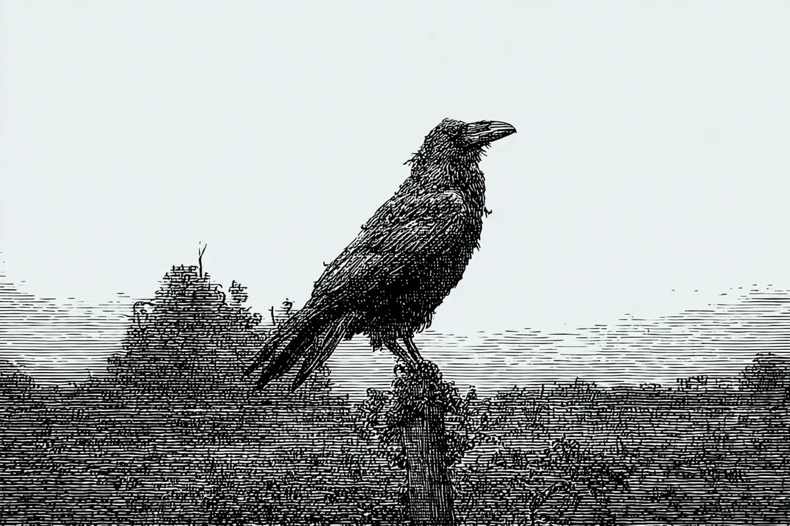

신의 목소리가 까마귀 안에서 성난 벌떼처럼 윙윙거렸다. “잘못된 사람이야,” 라고 말했다. 새는 사원의 부서진 가고일을 더욱 단단히 움켜쥐었다. 발톱이 수백 년의 비에 닳아 매끈해진 돌을 긁었다. 아래쪽의 마을은 어제보다 더 작아 보였다—더 많은 지붕이 처져있고, 연기 나는 취사용 화로도 더 적어 보였다.
[The god’s voice buzzed inside the crow like angry bees. “Wrong person,” it said. The bird tightened its grip on the temple’s crumbling gargoyle. Its claws scraped against stone worn smooth by centuries of rain. Below, the village looked smaller than yesterday—more roofs sagging, fewer cooking fires smoking.]
까마귀의 목구멍이 불타올랐다. 여전히 새벽에 죽은 소녀의 훔친 숨결을 담고 있었다. 그 맛이 까마귀를 놀라게 했다: 통증을 달래려 씹었던 잎사귀의 날카로운 박하 맛, 그리고 담요에 쏟아낸 피의 쇠 맛.
[The crow’s throat burned. It still held the stolen breath of a girl who’d died at dawn. The taste surprised it: sharp mint from the leaves she’d chewed for pain, and iron from the blood she’d coughed into her blanket.]
“왼쪽 무릎에 흉터가 있었어야 했는데,” 신이 고집을 부리며 까마귀의 날개뼈를 떨게 만들었다. 하지만 새는 소녀의 양모 드레스를 걷어올렸던 것을 기억했다—강가의 돌처럼 매끄러운 피부였다. 그녀는 죽어가며 비밀을 속삭였다: “이 이름을 훔쳤어. 이 삶을 훔쳤어.”
[Left knee should’ve had a scar,“ the god insisted, making the crow’s wing bones tremble. But the bird remembered peeling back the girl’s woolen dress—skin smooth as river stones. She’d whispered secrets while dying: "Stole this name. Stole this life.”]
까마귀는 기침하듯 숨결을 내뱉었다. 은빛 안개가 부리에서 피어올라 마을 광장 위에서 작은 회오리가 되어 돌았다. 늙은 여인들은 빗자루질을 멈추었다. 아이들은 반짝이는 구름을 가리켰다. 이 이상한 날씨가 사실은 신과 그의 전령 사이의 말다툼이라는 것을 아무도 몰랐다.
[With a hacking cough, the crow forced the breath out. Silver mist rose from its beak, twisting into a tiny spinning storm above the village square. Old women paused their sweeping. Children pointed at the glittering cloud. None knew this strange weather was really an argument between a god and its messenger.]
“올바른 자를 찾아라,” 신이 이제 더 크게 명령했다. 그 말에 까마귀의 눈에 눈물이 고였다. 까마귀는 하늘로 날아올랐고, 검은 깃털이 차가운 공기를 가르며 지나갔다. 농가를 지나치며 낮게 날아—빨랫줄에서 아직 따뜻한 숄을 낚아챘다. 천에서는 장작 연기와 잿물 비누 냄새가 났다. 영리한 새들이 이 속임수를 가르쳐주었다: 도둑질을 사고처럼 보이게 하는 것.
[Find the right one,“ the god commanded, louder now. The words made the crow’s eyes water. It launched into the sky, black feathers slicing through cold air. Passing a farmhouse, it swooped low—snatched a still-warm shawl from a clothesline. The fabric smelled like woodsmoke and lye soap. Smart birds had taught it this trick: make thefts look like accidents.]
오후가 되자, 까마귀는 대장장이의 포효하는 용광로 근처에 자리잡았다. 여기서는 신의 목소리가 망치 소리와 뜨거운 쇠의 쉬쉬 소리에 묻혔다. 새는 부리를 열어 노인의 마지막 숨결을 놓아주었다—숯과 신 우유 냄새가 났다. 연기 속에서 기억이 펼쳐졌다:
[By afternoon, the crow perched near a blacksmith’s roaring furnace. Here, the god’s voice faded beneath hammer clangs and the hiss of hot metal. The bird opened its beak, letting an old man’s final breath escape—it smelled like charcoal and sour milk. A memory unfolded in the smoke:]
굽은 등의 아버지가 부러진 쟁기날을 다루는 아들의 손을 이끌고 있었다.
[A bent father guiding his son’s hands on broken plow blades.]
뼈를 갉아먹는 병에도 불구하고 굳은살 박힌 손가락은 흔들림이 없었다.
[Calloused fingers steady despite the sickness eating his bones.]
"다시,” 그가 쉰 목소리로 말했다, 소년의 수리가 견고해질 때까지.
[“Again,” he rasped, until the boy’s repair held strong.]
까마귀의 뱃속이 뒤틀렸다. 이번 달에만 여덟 개의 그런 숨결을 전달했다. 각각은 같은 진실을 보여주었다—신은 선한 마음 따위는 신경 쓰지 않고, 오직 천상의 체크리스트와 완벽하게 일치하는지만 중요했다.
[The crow’s stomach churned. It had delivered eight such breaths this month. Each showed the same truth—the god cared nothing for good hearts, only for perfect matches to some heavenly checklist.]
해가 저물어 들판을 황금빛으로 물들일 때, 새로운 명령이 내려왔다: “직공의 딸. 새벽에 그녀의 숨결을 가져와라.”
[As sunset painted the fields gold, new orders came: “The weaver’s daughter. Bring her breath at dawn.”]
까마귀의 깃털이 쭈뼛거렸다. 이제는 그 징조를 알아볼 수 있었다—희미한 라벤더 향이 나는 사람들은 항상 “실수"가 되었다. 이 소녀는 목구멍에 미완성된 노래들을 담은 채 죽을 것이고, 그녀의 숨결은 신의 깔끔한 기록부에 담기기엔 너무나 거칠 것이다.
[The crow’s feathers prickled. It recognized the signs now—people marked by a faint lavender scent always became "mistakes.” This girl would die with half-finished songs stuck in her throat, her breath too wild for the god’s tidy records.]
아침이 되자, 까마귀는 죽어가는 소녀의 창가에 조용히 앉았다. 그녀의 숨결이 따뜻하게 쏟아져 나왔다—재스민 꽃과 희미하게 기억나는 자장가. 까마귀는 그것을 부리로 잡는 대신, 훔친 숄을 휙 꺼냈다. 천이 그녀의 음악 같은 한숨을 목마른 스펀지처럼 빨아들였다.
[When morning came, the crow perched silently on the dying girl’s windowsill. Her breath escaped in a warm rush—jasmine flowers and half-remembered lullabies. Instead of catching it in its beak, the crow whipped out the stolen shawl. The cloth swallowed her musical sigh like a thirsty sponge.]
신의 분노가 마을의 모든 북쪽을 향한 창문을 산산조각 냈다. 까마귀가 위로 날아오르는 동안 유리 조각들이 진흙 거리 위로 비처럼 쏟아졌고, 까마귀는 발톱으로 숄을 꽉 움켜쥐고 있었다.
[The god’s rage shattered every north-facing window in the village. Glass rained down on muddy streets as the crow soared upward, the shawl clutched tight in its talons.]
“반란이라고?” 그 목소리는 이제 관심이 섞인 듯한 윙윙거림을 냈다. 사원 높이 위에서 까마귀는 놓아주었다. 숄은 위로 춤추듯 날아갔다—신들조차 지켜보는 것을 잊어버린 곳, 구름 너머, 별들 너머로 소녀의 숨결을 실어 나르는 이상한 연이 되어.
[“Rebellion?” The voice now buzzed with something like interest. High above the temple, the crow let go. The shawl danced upward—a strange kite carrying the girl’s breath beyond clouds, beyond stars, to places even gods forget to watch.]
새로운 힘이 까마귀의 가슴을 따뜻하게 데웠다. 사원 지붕에 내려앉아 깃털을 다듬기 시작했고, 부리의 각각의 신중한 움직임은 말로 표현할 수 없는 것을 말했다: 난 더 이상 당신의 심부름꾼 새가 되지 않겠어.
[New strength warmed the crow’s chest. It landed on the temple roof and began preening, each deliberate stroke of its beak saying what words couldn’t: I’m done being your errand bird.]
지붕에서 얼음이 녹았다. 어제 죽음이 예정되어 있던 아픈 아이가 어머니의 품에서 웃음을 터뜨렸다.
[Ice melted from rooftops. A sick child—marked for death yesterday—laughed in her mother’s arms.]
새벽이 되자, 까마귀는 가고일 위에 놓여있는 피처럼 붉은 씨앗 하나를 발견했다. 화해의 제안일까? 함정일까? 새는 고개를 갸웃거리더니, 씨앗을 통째로 삼켰다. 그 맛이 까마귀를 놀라게 했다—달지도 쓰지도 않고, 마치 구리 동전을 핥는 것 같았다. 새로운 게임이 시작되었다.
[At dawn, the crow found a single blood-red seed waiting on the gargoyle. Peace offering? Trap? The bird cocked its head, then swallowed the seed whole. The taste surprised it—not sweet, not bitter, but like licking a copper coin. A new game had begun.]